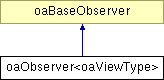

oaObserver<oaViewType> Class Template Reference
Inheritance diagram for oaObserver<oaViewType>:
_map" border="0" alt="">
Detailed Description
template<>
class oaObserver<oaViewType>
This base template class can be used to derive observers for oaViewType objects. It supports postCreate event notifications.
Scoped observers are also available for oaViewType objects.
See oaObserver for information on using OpenAccess observer template classes to derive and instantiate observers in an application.
Constructor & Destructor Documentation
|
|
This is the oaVersionedObserver<oaViewType, oacObserverVersion1> constructor. If multiple observers exist for a given oaViewType notification event, observers with a lower priorityIn value are called before those with a higher value.
- Parameters:
-
| priorityIn | Priority of this observer relative to other oaViewType observers. |
| enabledIn | Determines whether this observer is called when an observed event occurs. |
|
|
|
This is the destructor for the oaObserver<oaViewType> class. This function destroys this oaObserver<oaViewType> object, deactivating and deleting this observer from the ViewType observer list, and freeing all resources associated with this observer. |
Member Function Documentation
|
|
This function returns true if any observers for this type are active. |
|
|
This function is called after an oaViewType object has been created. The application's derived observer class should implement this function to receive notification after an oaViewType object is created.
- Parameters:
-
| viewType | A pointer to the created oaViewType object. |
|
The documentation for this class was generated from the following files:
Return to top of page
Copyright © 2002 - 2010 Cadence Design Systems, Inc.
All Rights Reserved.